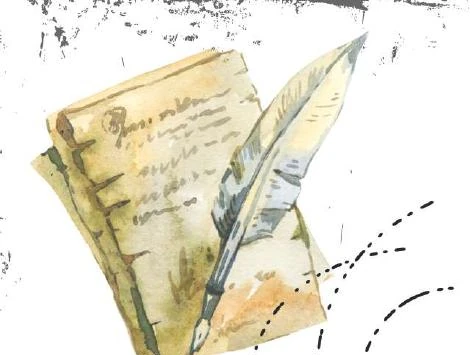

Winter · 7 poems
The Ethnographer
Near the fire, stories preserve folklore, ritual, shared memory, and what one generation carries into another.
- 01 Coffee shop The door gives a ring, and the lights softly gleam,
- 02 Koschei and the Prince Come close, my friends, and hear this tale
- 03 Farmer and the One-Eyed Likho In fields of gold and beds of green
- 04 Leshy and the Hunter Where forest green turns dark to black
- 05 Twelve Plates on Christmas Eve In quiet movements we set the scene
- 06 Love in the C and D key Here’s to a love that strengthens through years
- 07 The Heirs Children are the road ahead,